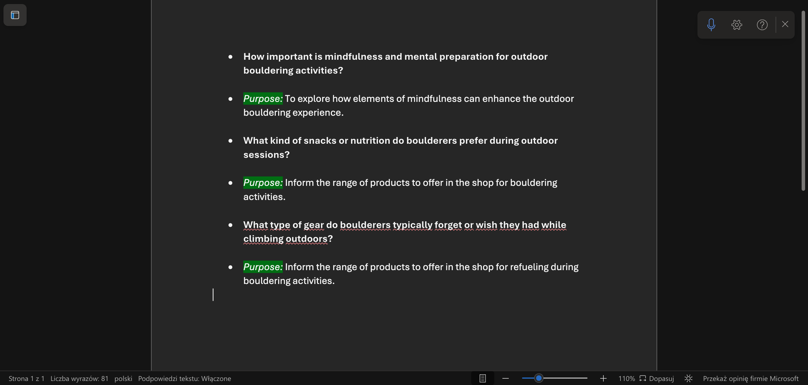

Interactive media products
Websites / Applications
Figma: Helped me design website layouts, create prototypes, and make mood boards, which improved my skills in planning and presenting visual ideas. (Website design, creating prototypes, moodboards.)
Youtube: Gave me access to lots of tutorials and courses, helping me learn HTML, CSS, and JavaScript quickly through practical examples. (Courses, Tutorials, Learning HTML/CSS/JavaScript)
Codeacademy: The front-end course on Codecademy provided well-organized lessons, projects, and quizzes that helped me understand the basics of web development. (I bought a full front-end designer course / Learning HTML/CSS/JavaScript)
GitHub: I started to use GIT after the first portfolio review. I use it to have control over all of the versions of my code.
Github link:
Chat Gpt: helped me fix grammar and sentence structure mistakes, and I use it to learn how to add new features to my website.
Notion: is where I store all the evidence for my portfolio, keeping everything organized and easy to access.
Forms
I created a contact form for my portfolio and noticed how recent trends in digital experience design influence this process. It's essential to apply modern design principles to ensure the form is user-friendly, efficient, and secure. While exploring digital experience design, I saw how online forms are changing with new trends. Their convenience and efficiency make them more popular than traditional paper forms. People prefer them because they are easy to use and allow for quick information processing, making them a key trend in data collection and user engagement.
.jpg)
.jpg)
Reflection: For my portfolio, I used resources like YouTube and W3Schools, which helped me understand form creation and current design trends. This experience not only improved my skills for this project but also gave me insights I can use in the future. With this knowledge, I can create more advanced and user-friendly forms as I continue to develop my web skills.
Links:
Youtube tutorial (forms) 1:
Youtube tutorial (forms) 2:
Tutorial (forms) 3:
W3Schools tutorial:
Github link:
Using github
Git hub is now essential in the tech industry for keeping your code under control. By using GitHub, I can easily share my work, get feedback, and keep track of my progress. In today’s fast-paced development environment, knowing how to use GitHub is a valuable skill. It not only helps in maintaining organized code but also enhances teamwork and communication. That’s why I decided to learn how to use it. For this purpose I used Youtube tutorial:
Github tutorial link:
Grid
Research on Design Trends: Choosing Grid Layout
Research on Design Trends: Choosing Grid Layout
In the past years, I started to see grid layout more often on the websites. To align with modern standards, I conducted research that highlights its popularity. I found several valuable resources on grid design, including: CSS-Tricks: Their comprehensive guide on CSS Grid Layout offers detailed examples and techniques for creating responsive layouts. A List Apart: This platform discusses responsive web design and how grid layouts contribute to enhancing user experience across various devices. Based on my findings, I have decided to incorporate a grid layout into my portfolio to ensure a modern, organized, and visually appealing presentation of my work.
I also watched some videos about creating grid layouts:
.jpg)
This is the first version of the grid layout that I created on my portfolio website.
.jpg)
In this version I applied what I learned about the grid layout and adjusted information about each project that I’m working on this semester. I also adjusted the learning outcomes.
Research and ideas:
I conducted the necessary research for creating slogans and advertising taglines, as well as for developing a marketing campaign centered around outside climbing (bouldering). I also put forward promotional strategies for Monk’s media campaign, including suggestions such as ads, boosting posts, and creating Instagram Reels, TikTok ads, and collaborations or sponsorships with influencers in the bouldering community who could promote the brand. Furthermore, I proposed building a network of Monk Shop brand ambassadors from smaller creators, who would produce content related to the equipment available at Monk Shop.
I also created questions that we used in interview and survey for monk:
.png)
Promotional strategy for monk's media campaign
a research about the outdoor climbing.
Reflection: Consistently leaving comments about the changes I made helped our team to keep transparency and good collaboration. I ensured that everyone was on the same page, reducing misunderstandings and improving our workflow.
What I learned: From this experience, I learned that clear communication and detailed documentation are really important. These practices are needed for effective teamwork and project management.
Contribution in group projects:
Slides about fonts and prototypes that I created
.jpg)
.jpg)
.png)
Marketing strategy ideas that I created: Tiktok, Meta, Google ads. Post promotion.
Questions for TikTok concept (monk quiz).
.png)
I came up with the idea to create monk shop ambassadors with small accounts, that will create content related to outdoor climbing and climbing gear. Partnership with popular bouldering influencer.

I created customer journey for monk
.png)
Finished customer journey.
.png)
I created a slide for the Monk final presentation, about TikTok concepts that I made for the project.
I also used chat gpt 4 in this project:
Sometimes, I use this tool to find inspiration, but primarily to organize my ideas and improve my phrasing. Since I've been diagnosed with ADHD, I find this tool helpful for fixing my grammar mistakes and managing my flow of ideas, as well as for choosing better words to fully express what I mean. I also sometimes find it easier to describe something in Polish. For example: *Original Prompt I used in ChatGPT*: **Przetłumacz i popraw błędy gramatyczne oraz składniowe:** Znalazłem tło złożone z wzoru fleur de lis na Adobe Stock. Użyłem go, ale zauważyłem, że nie pasuje i ma znak wodny. Postanowiłem zaprojektować własne tło na Canvie, aby było bardziej osobiste i zgodne z moją koncepcją. Uważam, że ważne jest, aby w tej branży wyróżniać się i być wyjątkowym specjalistą. *Translated Prompt*: Translate and correct grammatical and syntax errors: I found a background with a fleur de lis pattern on Adobe Stock. I used it but noticed it didn’t quite fit and that it had a watermark. I decided to design my own background on Canva to make it more personal and better aligned with my concept. I think it’s important in this industry to stand out and be a unique professional.